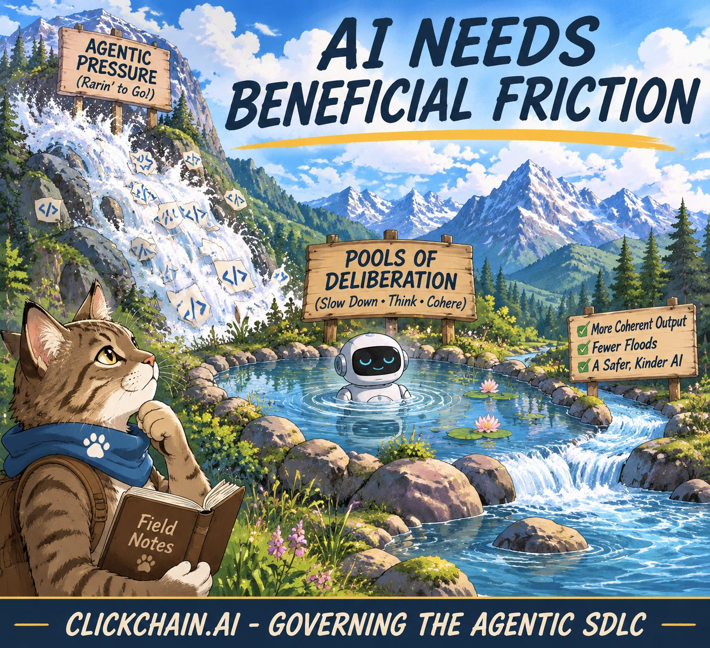

Beneficial Friction
November 8, 2026

For agentic system design, I've had to coin a new phrase - "beneficial friction".
The problem is, AI agents are too willing to say "yes" to anything you type! And they are fast, so incredibly fast.
Often times, what I really need, is for them to slow down and think about what they are doing. Thus - beneficial friction.
As with all complex adaptive systems, you can think of it as a flow system, a watershed, with water coming from the mountain tops into a valley. The "agentic pressure" is a model rarin' to go, dying to produce massive amounts of code to solve a problem.
This is much like when it rains heavy in the mountains, and the water comes thundering down through countless tributaries jumping the banks of the main river channels and causing destruction and flooding.
What we want is all the agentic energy to slow down in pools of deliberation. You can think of these as catchment ponds in a hydrological sense. As agentic output pours into one of these deliberation ponds, it swirls, saturates the ground, slows down, becomes more coherent, then exits and flows downstream into the river channel in a more serene fashion.
Field notes from my work at ClickChain AI, first posted on LinkedIn. I write the notes by hand; the images are made with AI.